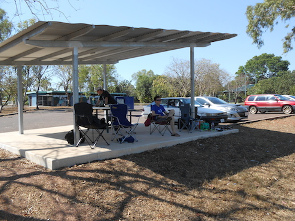

Previous Blog Entries:
Go to Top of Page
Videos from quad, hexcopters and helmets
2014
I have posted videos filmed from the YF680 hexcopter and TBS Discovery Pro using a GoPro. Enjoy...
SeanMac.Net - videos and photos served locally:
YouTube - Choose HD option from Settings Menu - Select 720p or 1080p:
Team BlackSheep Discovery Pro
Tuesday, January 19th, 2014
TBS Discovery Pro fully assembled and test flown with GoPro Hero 3 Silver
Tarot YF680
Sunday, March 2nd, 2014
Tarot YF680 (rebuild #4) fully assembled and test flown with GoPro Hero 3 Silver
Nakara Oval Quad Flying Meetup.
Saturday, July 12th, 2014
Met up with Matt, Ben and Richard for an afternoon fly. Richard bought down the monster hex from DJI that he uses for proffesional videography.


Go to Top of Page